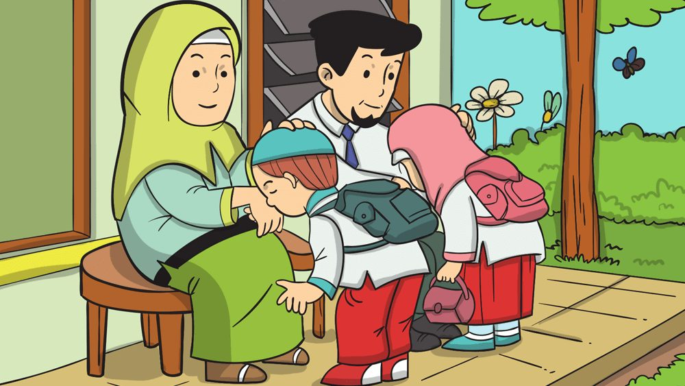

ADAB TERHADAP GURU DAN ORANG TUA

Orang tua merupakan orang yang secara jasmani menjadi asal keturunan anak, orang tua merupakan sosok yang paling dekat hubungannya dengan anaknya. Pengorbanan orang tua sungguh tiada tara, mereka mendidik kita dan menyerahkan hidupnya untuk keselamatan anaknya. Islam mengajarkan agar seorang anak untuk selalu menaati orang tuanya selama tidak bertentangan dengan agama. Dalam Al-Qur’an Allah sering mengiringkan perintah ta’at kepada-Nya diikuti dengan berbuat baik pada orang tua, karena merekalah tangan kedua setelah Allah. Sebagaimana Firman Allah swt. dalam surah An-Nisa’ ayat 36 sebagai berikut.
Artinya: "Dan sembahlah Allah dan janganlah kamu memperekutukan-Nya dengan sesuatu apapun. Dan berbuat baiklah kepada kedua orang tua, karib-kerabat, anak-anak yatim, orang-orang miskin. Sungguh, Allah tidak menyukai orang yang sombong dan membanggakan diri." (QS. An-Nisa 4:36). Dalam ayat tersebutm dijelaskan bahwa kita diwajibkan beribadah kepada Allah swt., juga berbuat baik kepada orang tua. Terutama seorang Ibu yang secara khusus Allah menyebutkan betapa berat mendidik anaknya, sejak dalam kandungan, melahirkan, menyusui, serta mendidik ke tahap selanjutnya. Oleh karena itu, ketika Rasulullah saw. ditanya, kepada siapa lebih awal berbuat baik? Beliau menjawab "kepada Ibumu, lalu Ibumu, dan Ibumu baru kemudian kepada bapakmu." Selanjutnya Allah swt. memerintahkan bersyukurlah atas ni’mat iman dan ihsan serta bersyukurlah kepada orang tua mu atas ni’mat tarbiyyah (pendidikan). Karena keduanya penyebab adanya kamu dan karena pendidikan mereka yang baik sehingga menjadi kuat. Kita harus selalu berbuat baik kepada kedua orang, sebagaimana Firman
Allah dalam surah Luqman ayat 14Artinya : "Dan Kami perintahkan kepada manusia (agar berbuat baik) kepada kedua orang tuanya. Ibunya telah mengandungnya dalam keadaan lemah yang bertambah-tambah, dan menyapihnya dalam usia dua tahun. Bersyukurlah kepada-Ku dan kepada kedua orang tuamu. Hanya kepada Aku kembalimu" (QS. Luqman 31:14). Dan yang harus menjadi pertimbangan adalah pendidikan dan kasih sayang orang tua terhadap anaknya tidaklah hanya dua tahun. Sebagaimana tuntunan Al-Qur’an, pendidikan anak diberikan sampai sang anak dewasa, bahkan sampai sang anak berkeluarga, seorang ibu pun sering membimbing anaknya. Tetapi perlu diperhatikan, jika kedua orang tua membawa kita untuk kekufuran dan syirik kepada Allah swt., maka tidak perlu untuk di ta’ati. Akan tetapi, tetaplah bergaul dalam urusan dunia baik dengan baik dan Ihsan sekalipun mereka musyrik. Karena kekufuran , mereka terhadap Allah, tidaklah menghilangkan kelelahannya dalam mendidik anak-anaknya, maka wajarlah jika Allah memerintahkan kita untuk merawat kedua orang tua kita pada masa tuanya ditunjukkan dalam firman Allah swt. QS. Al-Isra ayat 23 berikut. Artinya : "Dan Tuhanmu menetapkan bahwa janganlah kamu menyembah melainkan kepada-Nya dan berbuat baiklah kepada ibu bapak. Jika sampai salah seorang mereka atau keduanya telah tua dalam pemeliharaanmu (berusia lanjut), maka janganlah engkau katakan kepada keduanya "ah" dan janganlah engkau bentak keduanya, dan berkatalah kepada keduanya perkataan yang mulia (23). Dan rendahkanlah dirimu terhadap keduanya dengan penuh kasih sayang dan ucapkanlah “Wahai Tuhanku! Sayangilah keduanya sebagaimana mereka berdua telah mendidik aku pada waktu kecil (24)" (QS. Al-Isra 17 : 23-24).
Maka merugilah orang yang bersama kedua orang tuanya tetapi ia tidak bisa memeliharanya dengan baik dan berbakti kepada keduanya. Hal ini sebagaimana dalam sabda Rasulullah saw. yang artinya Dari Suhail, dari ayahnya dan Abu Hurairah. Rasulullah saw. bersabda, "Merugilah ia (sampai 3 kali)”. Para sahabat bertanya, "Siapa ya Rasulullah?”. Rasulullah saw. bersabda, "merugilah seseorang yang hidup bersama kedua orang tuanya atau salah satunya di saat mereka tua renta, tetapi ia tidak masuk surga". (HR. Muslim).